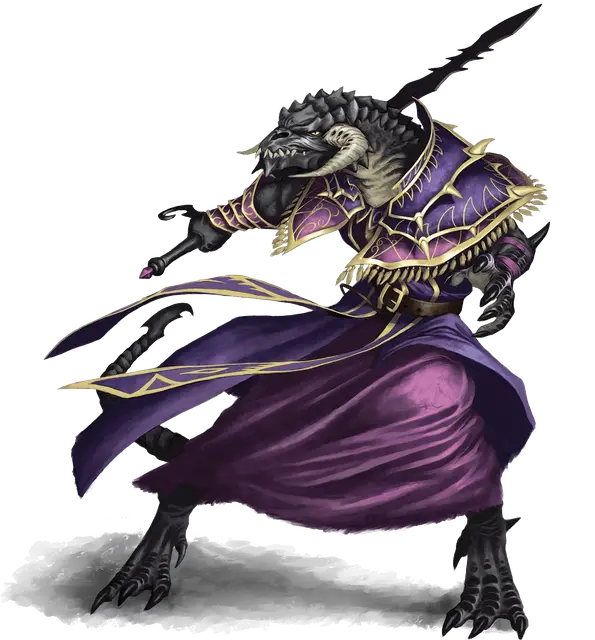

Резмир
Rezmir
Средний Гуманоид (Полу-дракон чёрный), нейтрально-злой, именной НИП

Класс Доспеха 13 (15 с Маской Чёрного Дракона)
Хиты 90 (12к8 + 36)
Скорость 30 футов
| мод | спас | ||
|---|---|---|---|
| СИЛ | 18 | +4 | +4 |
| ЛОВ | 16 | +3 | +6 |
| ТЕЛ | 16 | +3 | +3 |
| мод | спас | ||
|---|---|---|---|
| ИНТ | 15 | +2 | +2 |
| МДР | 12 | +1 | +4 |
| ХАР | 14 | +2 | +2 |
Навыки Магия +5, Скрытность +9
Иммунитет к урону кислота
Иммунитет к состояниям очарование, испуг
Чувства слепое зрение 10 футов, тёмное зрение 120 футов, пассивное Восприятие 11
Языки Общий, Великаний, Драконий, Инфернальный
Опасность 7 (2900 опыта)
Бонус мастерства +3
Особенности
Специальное снаряжение. У Резмир есть маска черного дракона [black dragon mask] и эмблема Когтей [insignia of Claws].
Амфибия. Резмир может дышать под водой.
Тёмное преимущество. Раз в ход, Резмир может нанести дополнительные 10 (3к6) урона, когда она попадает вооружённой атакой и атака проходила с преимуществом.
Драконье Величество. Пока Резмир не носит доспехов и носит Маску Чёрного Дракона, она может прибавлять бонус Харизмы к своему Классу Доспеха (см. выше).
Легендарное Сопротивление (1/день). Если Резмир носит Маску Чёрного Дракона и проваливает спасбросок, она может выбрать вместо этого преуспеть в нём.
Действия
Двуручный меч (Хазирун). Рукопашная атака оружием: +9 к попаданию, досягаемость 5 футов, одна цель. Попадание: 13 (2к6+6) рубящего урона плюс 7 (2к6) урона некротической энергией. Если цель - существо, то оно не может восполнять хиты в течение 1 минуты. Цель может совершать спасбросок Телосложения Сл 15 в конце каждого своего хода, при успехе завершая этот эффект раньше времени.
Едкий заряд. Дальнобойная атака заклинанием: +8 к попаданию, дистанция 90 футов, одна цель. Попадание: 18 (4к8) урона кислотой.
Дыхание кислотой (Перезарядка 5-6). Резмир выдыхает кислоту в форме линии, 30 футов длинной и 5 футов шириной. Каждое существо на этой линии должно преуспеть в спасброске Ловкости Сл 14. При неудаче оно получает 22 (5к8) урона кислотой, а при успехе - половину этого урона.
Легендарные действия
Если она носит Маску Чёрного Дракона, Резмир может предпринимать два легендарных действия между своими ходами, исполняя оба разом или распределяя их по раунду. Легендарные действия могут быть предприняты лишь в начале или конце хода. Резмир обладает следующими вариантами легендарных действий, некоторые из которых длятся дольше одного действия:
Тьма (стоит 2 действия). Магическая тьма, сферой радиусом в 15 футов, накрывает точку в пределах 60 футов от Резмир, которую та может видеть (тьма распространяется и за пределы видимости). Тьма держится пока Резмир поддерживает концентрацию, до 1 минуты. Существа с тёмным зрением не могут видеть сквозь эту тьму и обычными методами её не осветить. Если область этой тьмы пересечётся с областью света, созданного каким-либо заклинанием 2-го или ниже уровня, заклинание, создавшее свет, рассеивается.
Атака. Резмир проводит одну рукопашную атаку.
Засада. Резмир предпринимает действие Засада.